Software para generación de trayectorias de circuitos impresos en la fresadora Roland monoFab SRM-20.
Visitar Mods Project
Mods una plataforma basada en la web que permite transformar nuestros diseños 2D (archivos .svg o .png exportados de KiCad) en instrucciones de movimiento 3D.
A través de una interfaz de "módulos" calculamos exactamente por dónde pasará la broca para perforar o cortar el cobre de nuestra placa.
Dentro de la página elegimos Programs, en el buscador escribimos "SRM" y seleccionamos mill 2d pcb.
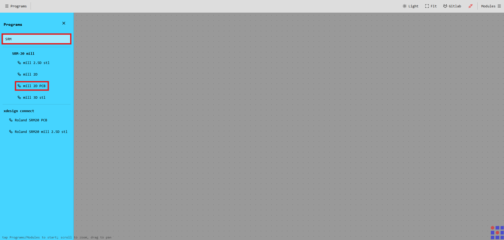
Al cargar el programa, se desplegará una red de módulos conectados automáticamente. Así es como se ve el área de trabajo completa:
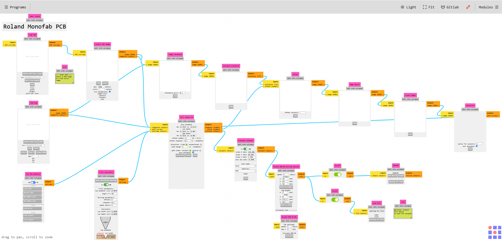
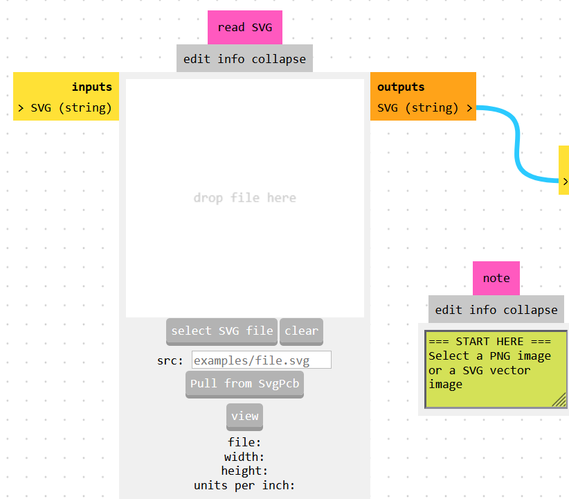
En el módulo Select SVG File, cargamos el archivo que exportamos previamente de KiCad. Aquí confirmamos las dimensiones físicas de la imagen
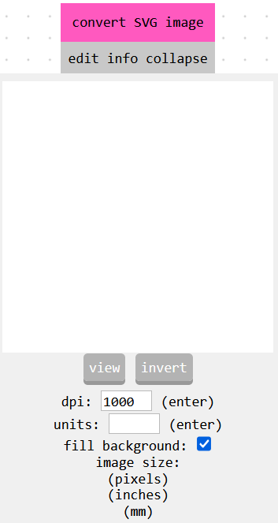
La máquina corta las zonas oscuras y deja intactas las blancas. Si nuestro archivo no viene con la zona de la placa rellena, utilizamos la opción Invert para asegurarnos de que la fresadora corte alrededor de las pistas y no sobre ellas.
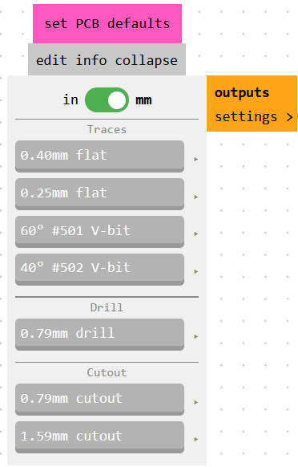
Este módulo nos permite seleccionar si vamos a raspar el cobre (0.40mm flat) o si vamos a perforar por completo la placa (0.79mm drill).
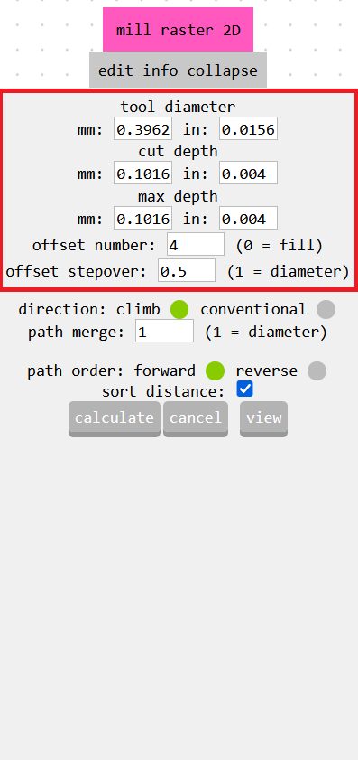
Aquí configuramos el diámetro exacto de la broca, la profundidad de cada pasada (Cut depth), la profundidad máxima total (Max depth) y el número de pasadas (Offset number) que la máquina hará.
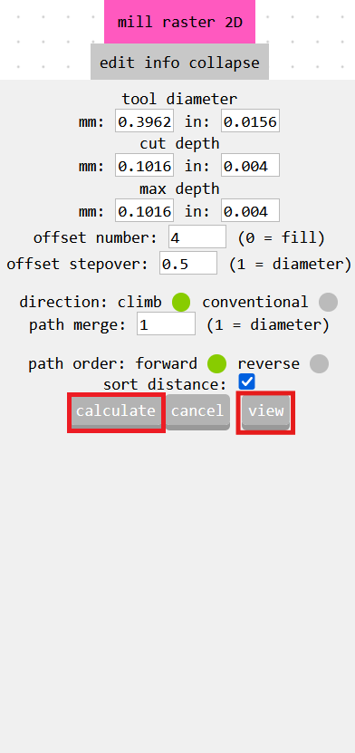
Al hacer click en el botón "Calculate", este genera una vista 2D y una vista 3D. La primera vista que nos genera es la 3D en la que podemos ver la placa con los trazos de la máquina ya realizados.
Y cuando seleccionamos "View" podemos ver la vista 2D que se ve en el recuadro inferior en una pestaña nueva, las líneas negras indican el camino que seguira la fresadora y las líneas rojas nos muestran que la fresadora se elevaría y se movería a otro lugar de la placa
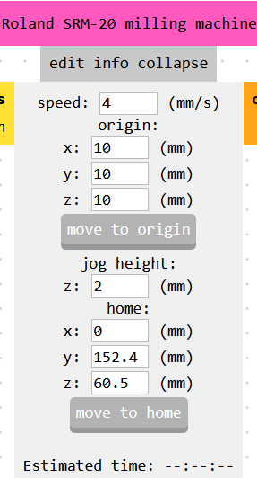
Aquí debemos ajustar el origen en X, Y y Z preferiblemente a 0 mm. También aquí establecemos la velocidad de la máquina (mm/s), clave para no romper la broca "fina". Además de que en la parte inferior del módulo podemos ver un tiempo aproximado que tomará la máquina en hacer todo el proceso.
(Si se desea hacer 2 placas al mismo tiempo en la MonoFab se pueden mover las coordenadas del origen a otro lugar de la placa fenolica donde puedan realizar la otra PCB)
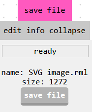
Seleccionamos Save File y automáticamente se descargará el archivo .rml
A continuación sepresentan, los parámetros exactos que introducimos en Mods para exportar nuestros 4 archivos SVG específicos.
La máquina necesita una preparación física aunque no lo parezca. A continuación, el protocolo de pasos para configurar la fresadora, asegurar la placa fenólica y calibrar las herramientas.
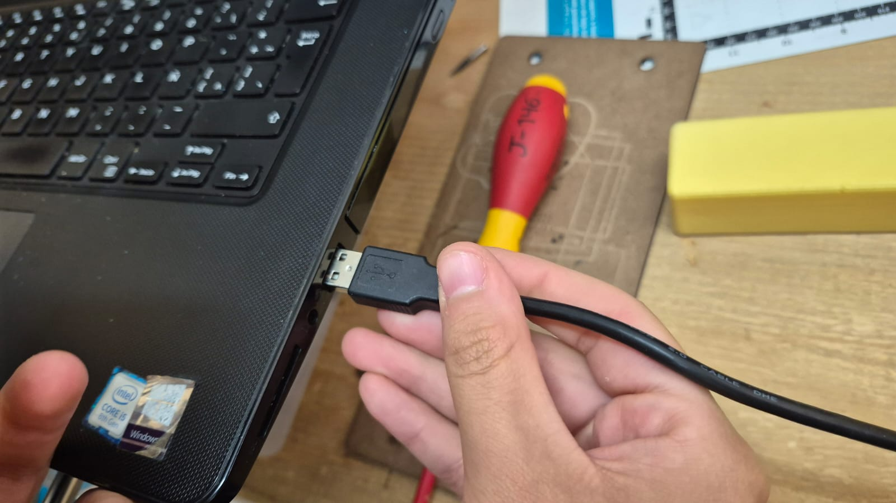
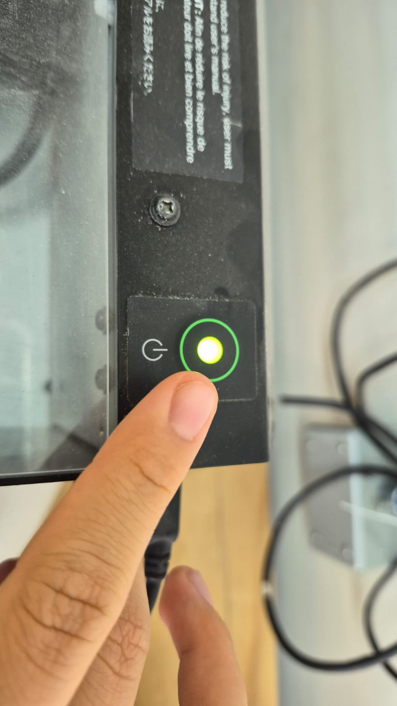
Paso 1: Enchufamos el cable USB de la fresadora a un puerto de la computadora para poder habilitar el VPanel.
Paso 2: Presionamos el botón de encendido que esta en la parte superior de la máquina.
Paso 3: Abrimos el cajón frontal de la MonoFab para tomar las herramientas como la llave Alen y los tornillos de fijación.
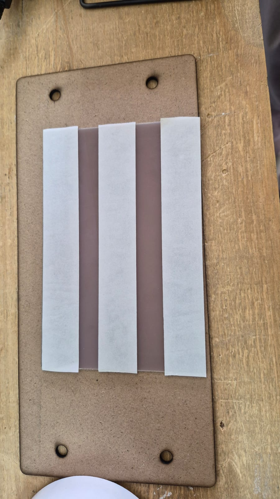
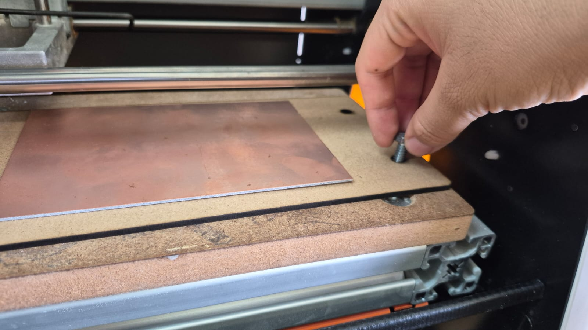
Paso 4: Aplicamos cinta de doble cara en la parte posterior de la placa de cobre. Esto evita que la placa genere movimientos que puedan perjudicar el como queden los trazos d ela fresadora.
Paso 5: Colocamos la placa sobre la tabla de sacrificio. Atornillamos firmemente la tabla en la máquina.
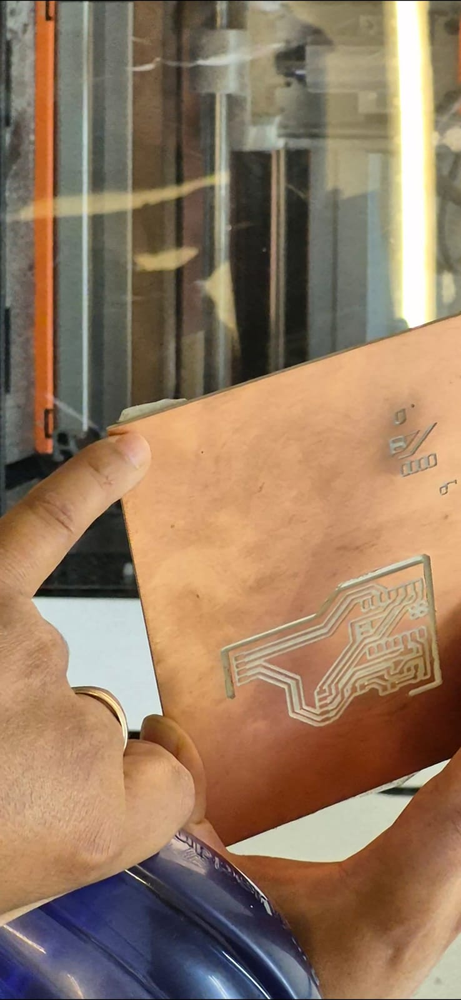
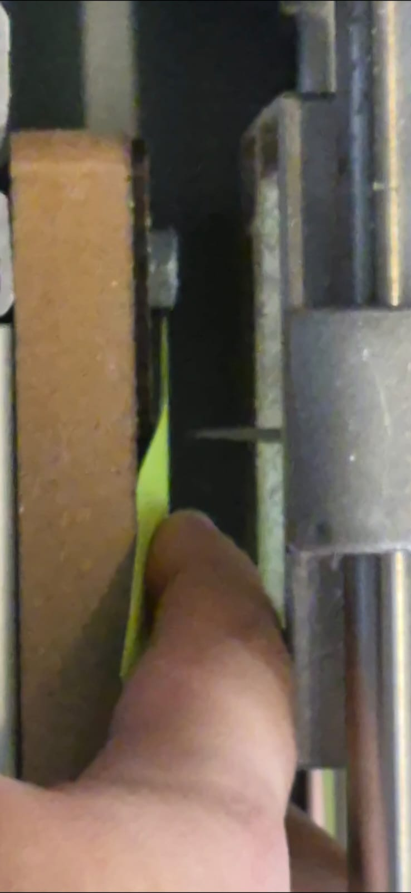
Paso 6: Movemos el cabezal para fijar el Origen X/Y. Es vital hacer esto antes de bajar la broca.
Advertencia para optimización: Ajusta el origen de la fresadora lo más cercano al borde de la placa posible. Esto evita el desperdicio en el centro y conserva partes que se pueden usar en un futuro.
Paso 8 (Calibración): Para fijar el Origen Z, colocamos un Post-it sobre la placa. Bajamos lentamente hasta que la punta raspe ligeramente el papel al intentar deslizarlo. Ahí marcamos el origen.
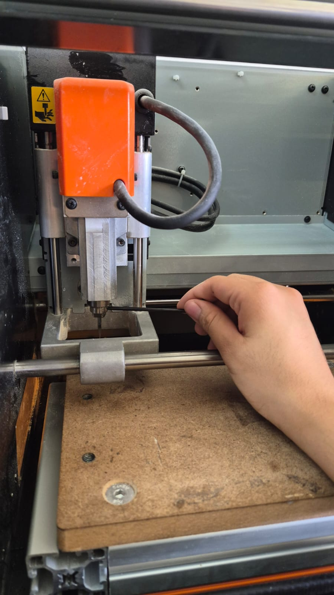
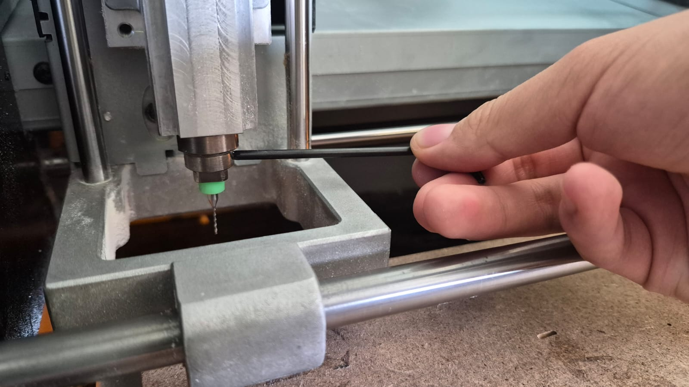
Paso 7 (Perforaciones): Instalamos la punta para las perforaciones (0.79mm) y para esta y todas las demás brocas que vayamos a usar se utiliza la llave Alen para aapretarlas en la boquilla de la fresadora. Esta herramienta taladrará los agujeros de los componentes que los usen.
Paso 9 (Pistas): Al terminar las perforaciones, el cabezal regresará al origen. Cambiamos la herramienta por una punta de pistas (0.40mm) para raspar el cobre aislando nuestras pistas sin perforar la placa fenólica. Nota: Es necesario recalibrar Z con el Post-it tras cada cambio de broca.
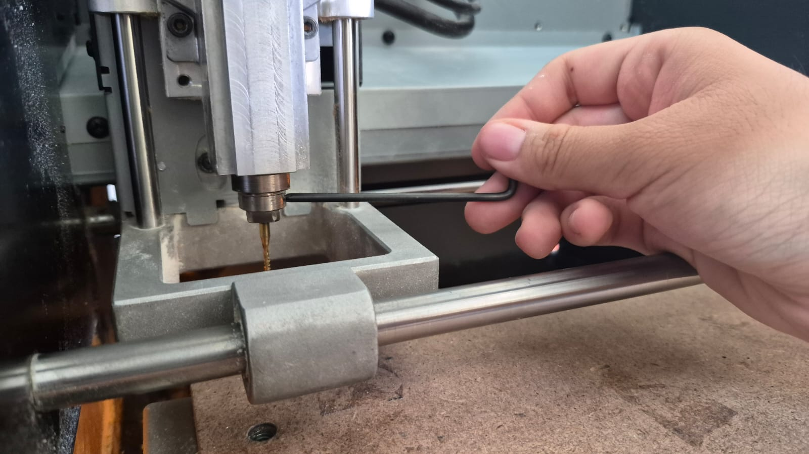
Paso 10: El último paso. Cambiamos la broca por la de mayor diámetro (1.9mm) diseñada para cortes profundos. Volvemos a calibrar el eje Z y mandamos el archivo de contorno.
Esta pasada atravesará todo el grosor del material, separando nuestra PCB terminada de la tabla restante de manera limpia.
Este es el software donde cargamos el archivo .rml y operamos físicamente la máquina.
Aquí se pueden observar fotos y vídeo del proceso
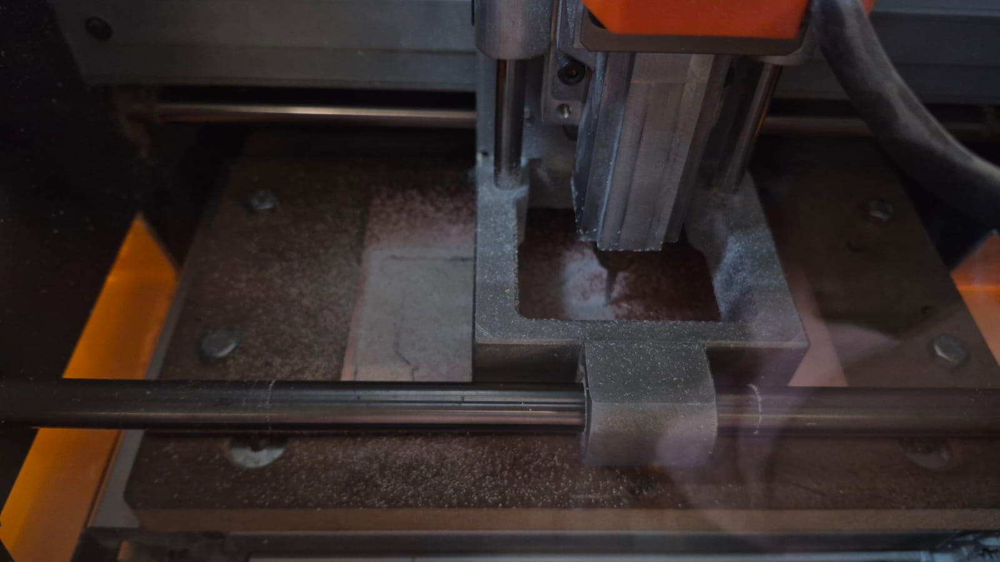
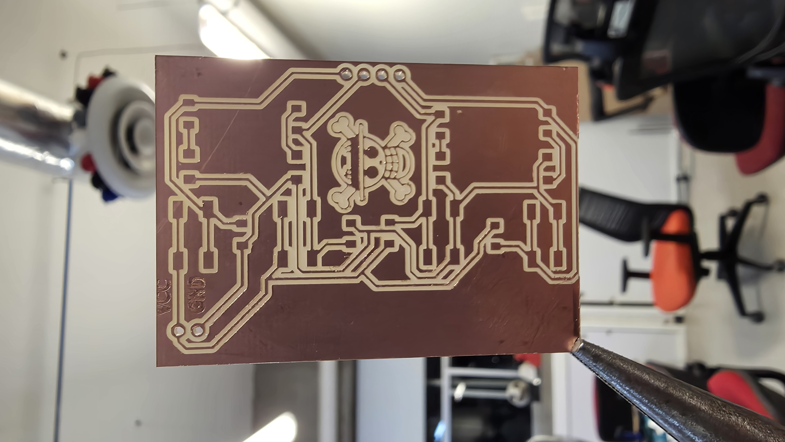
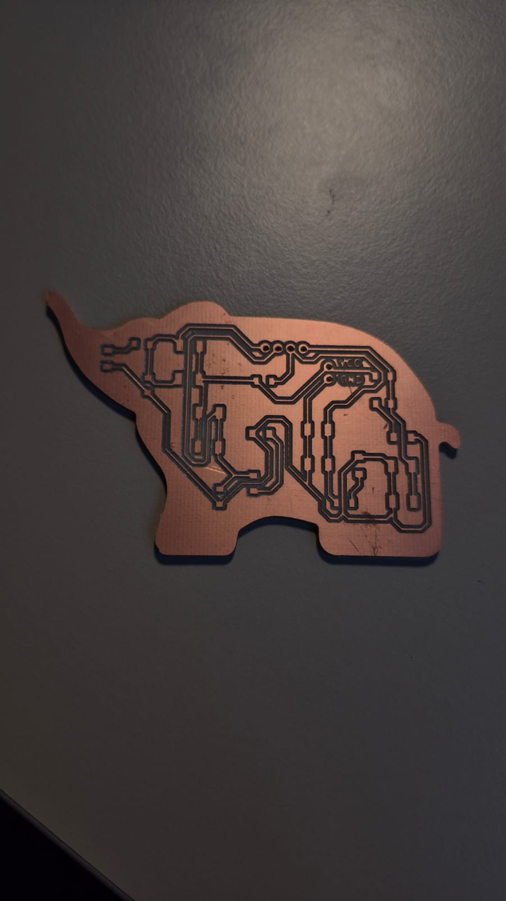
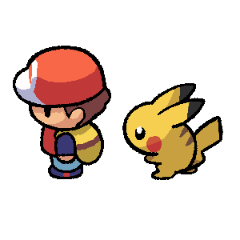